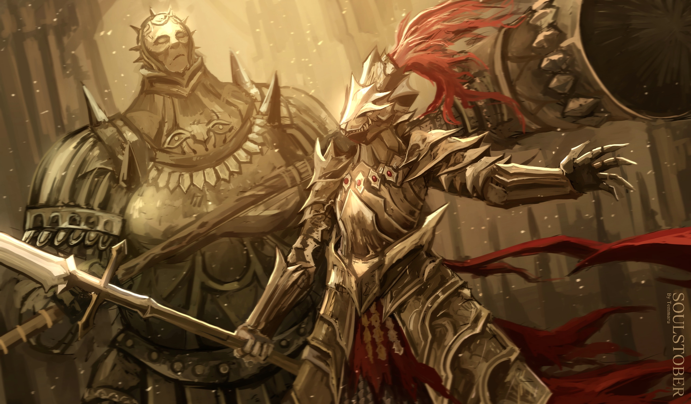
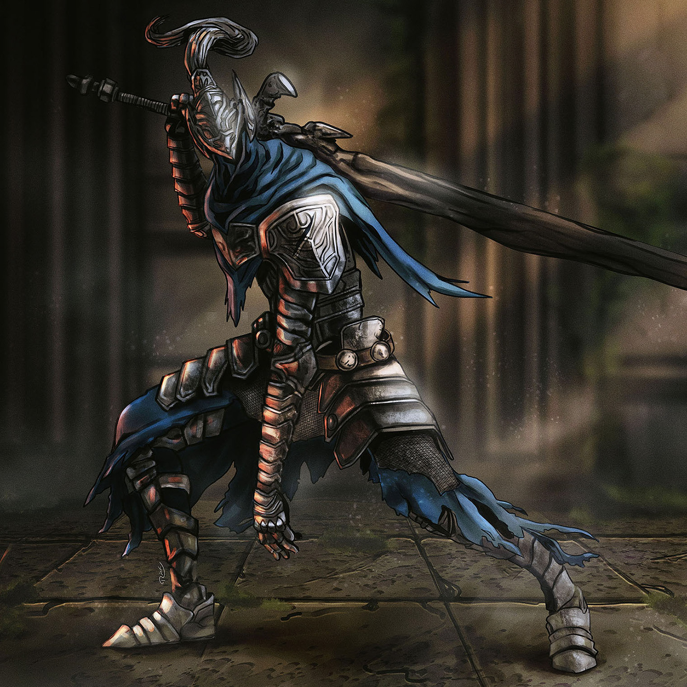
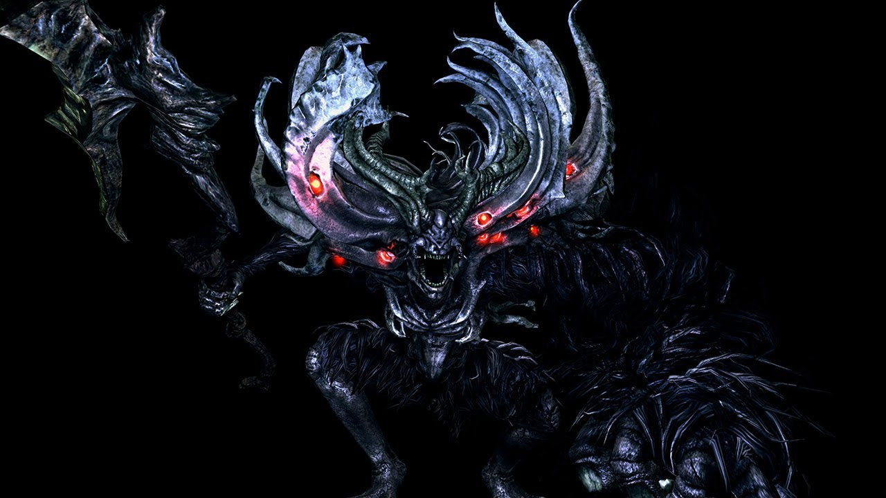
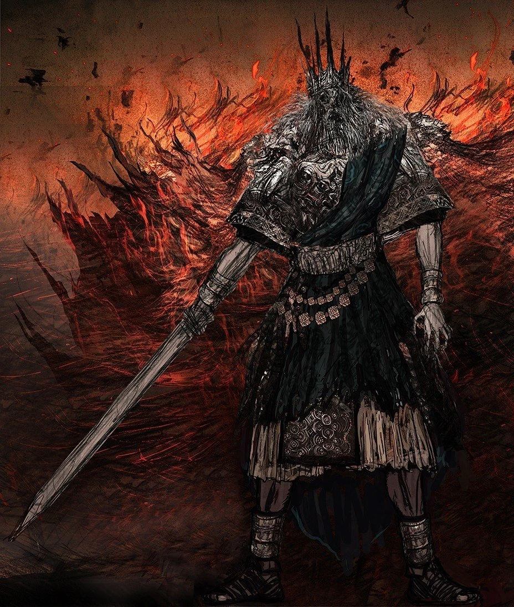
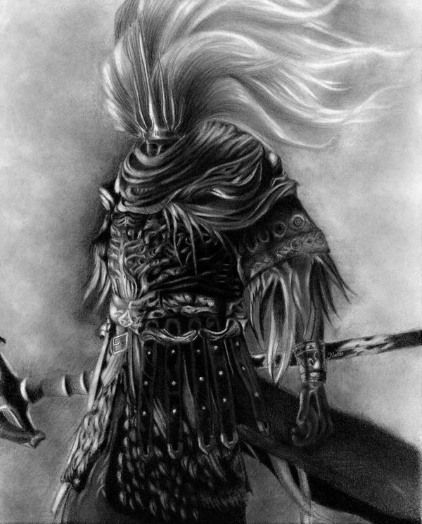
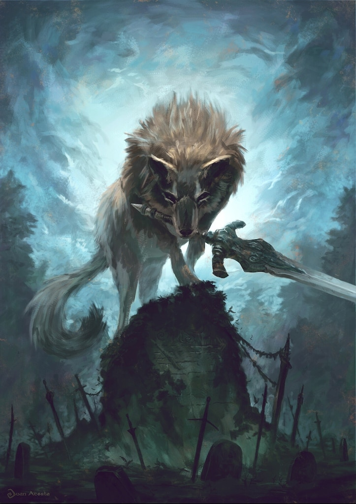

Ornstein & Smough
Considerada uma das batalhas mais famosas da história dos videogames, Ornstein e Smough representam o ápice da dificuldade em Anor Londo, exigindo estratégia, posicionamento e controle absoluto.
Conheça os inimigos mais icônicos, brutais e memoráveis de Lordran. Cada boss representa uma peça essencial da lore e do desafio de Dark Souls.

Considerada uma das batalhas mais famosas da história dos videogames, Ornstein e Smough representam o ápice da dificuldade em Anor Londo, exigindo estratégia, posicionamento e controle absoluto.

O lendário Andarilho do Abismo, consumido pela corrupção que tentou impedir.
Dificuldade AltaA dupla lendária de Anor Londo, símbolo do desafio soulslike.
Muito Difícil
Uma entidade primordial tomada pelo descontrole da humanidade.
Extremo (Easy para Vinícius)
O Senhor da Luz Solar, reduzido a uma sombra do que um dia foi.
Alta
Um antigo deus guerreiro, esquecido pela própria história.
Insano
O fiel guardião do túmulo de Artorias e um dos confrontos mais tristes do jogo.
MédiaCada boss possui trilha sonora, arena e estilo de combate projetados para refletir sua história e personalidade.
Dark Souls recompensa observação, paciência e adaptação. A derrota faz parte do processo de aprendizado do jogador.